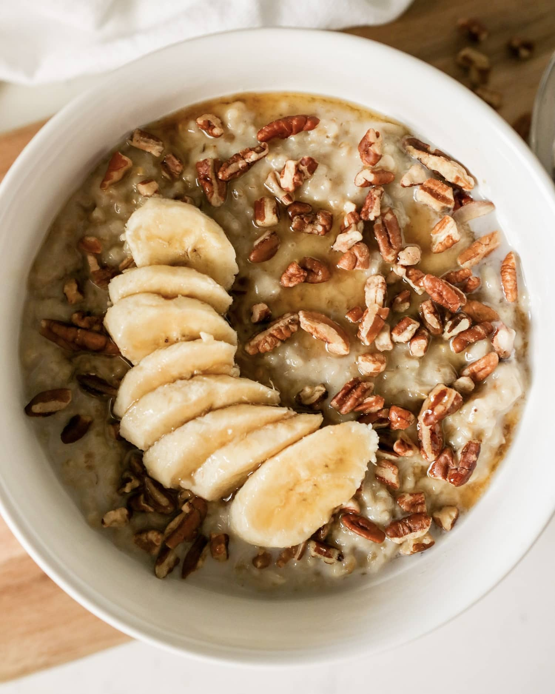

Banana Nut Oatmeal

Description
This Banana Nut Oatmeal seriously tastes so good, you almost
forget that you're eating oatmeal! Chopped pecans or walnuts
are added on top along with maple syrup and extra banana
slices.
Ingredients
- 1/2 cup Trader Joe's Oatmeal with ancient grains and seeds
- 1/2 cup Oat milk
- 1/2 cup water
- maple syrup, to taste
- brown sugar, to taste
- half a banana, sliced
- 1/4 cup nuts of your choice
Steps
- Heat a small saucepan on medium high heat with water and oatmilk.
Bring to a boil
- Add oats and boil for 1 minute, stirring constantly
- Remove from heat and let sit for 2 minutes
- Transfer cooked oatmeal to a bowl and top with sliced
bananas, nuts, maple syrup, and brown sugar. Enjoy!